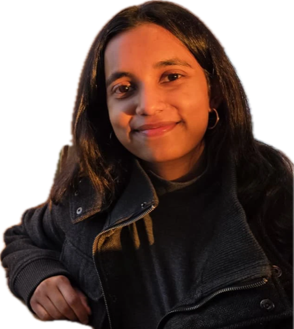

. Making things in the meantime. Currently based in Dresden.
. Making things in the meantime. Currently based in Dresden.

Worked on empowerment-based assistance in multi-agent RL: giving an assistant a real body in the environment and measuring how that changes the help it can give.
Hi, I'm Pakhi


AI, products, design, in roughly that order.
AI, products, design, in roughly that order. I'm a